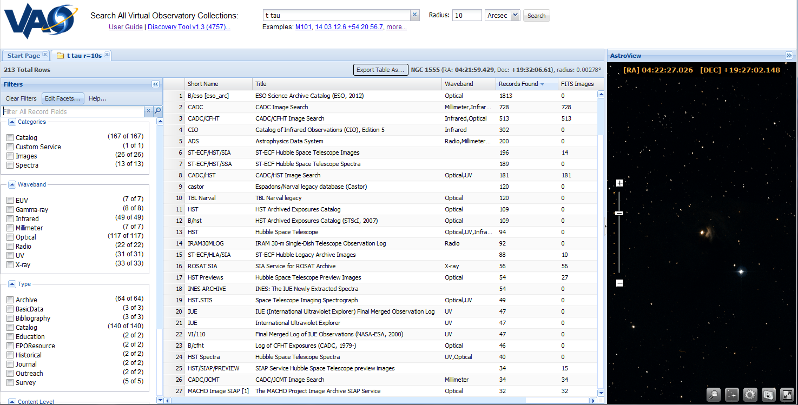
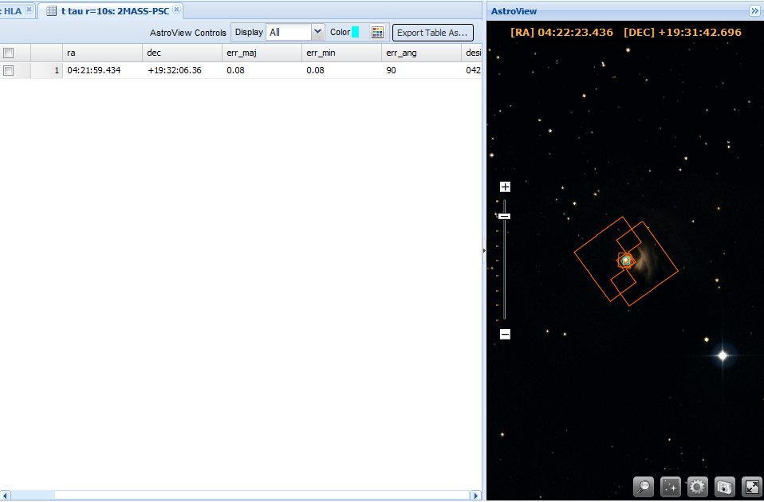

Tutorial: Data Discovery Portal
Discovering New Data on the Enigmatic T Tau Young Stellar Object
Authors: August Muench, Sarah Emery Bunn, Geoff Wallace, Tom Donaldson
Version 1.4 - November, 2012
Summary
The purpose of this tutorial is to demonstrate the pan-archive search,
interrogate, data retrieval and visualization features of the Data
Discovery Tool.
A Case Study for the VAO Data Discovery Portal
T Tau is a multiple component protostar in the Taurus molecular cloud. It has companions on scales of a few arcseconds and a reflection nebula between 45" and 60" from the system (Hind’s Nebula). Motivations for studying T-Tau include:
- Can the source’s spectral energy distribution (SED) be improved using recently released measurements in infrared catalogs such as WISE or UKIDSS? [See also the VAO Iris SED tool.]
- How variable has T Tau been in the near-IR (e.g., comparing UKIDSS to 2MASS) or in the mid-IR (e.g., comparing Spitzer to WISE)?
- Are there new high-resolution images of the binary components?
Finding High Resolution Images of T Tau
- Launch the Data Discovery Portal, accessible from http://vao.stsci.edu/discover
- Enter “T Tau” as the object. Name resolution of
sources is provided via various databases.
- Given the small size of the object enter 10 and
‘Arcsec’ into the search radius box.
The Portal conducts its searches asynchronously, meaning that new results stream in as remote services respond. Unless the query has been cached, you will need to press the "Refresh Table" button to load new results. Expect that the number of results will increase rapidly at first, but then continues to increase as more services respond.

As results stream back, a new tab (labeled ‘T Tau r=10s”) is produced in the main panel and a set of data categories (images, catalogs, etc.) is constructed in the left panel.
- Click on ‘Image’ in the Category filter.
- In order to assess what Hubble Legacy Archive/Advanced Camera for
Surveys data exist, type ‘HLA’ into the free text search
box at the top of the filters panel to narrow the results list.
Note that entering "HST" or "Hubble" will also narrow the
results significantly, and the Hubble Legacy Archive row will be
included.
- Select the row "HLA [1]" from the results panel. A popup
window labeled "Details: t tau r=10s" will give details about
that resource.
- From the Details window, click "Continue to Data" to send the
results into a new table labeled “T Tau r=10s:HLA [1]”.
- The table returned gives data specific to these observations; for
example, the column labeled “Exposure Time” indicates the
duration of the exposure in seconds. In particular, this table is
specially recognized by the tool and, rather than displaying only data
in the grid, it knows to present preview images inline with the data.
However, this capability is the exception rather than the norm at
present.
- Notice that the AstroView all-sky viewer has detected image
footprints in this grid and projected them on to the default sky survey.
- Enter "ACS" in the filters panel to filter down to the available
ACS data, which also filters down to only the ACS/SBC footprints in
AstroView. For each row, a popup Details window describes the
individual image. At this point you can open/download the JPG file of
the image.
- Press the "Clear Filters" button in the filters panel to reset
the display. Select an image of interest from the
grid by checking the box on its row. This visually highlights the row
the corresponding footprint in AstroView. Unselect this image and
scroll to the top of the grid.
- In AstroView, click on a footprint of interest. Many footprints are actually a stack of coincidental exposures, so it is likely that several of the grid rows have been selected. This also highlights the footprints, selects their rows in the grid, and moves them to the top of the grid for easy location.
Finding Infrared Catalogs about T Tau
This example picks up from the previous one, except that instead of looking for images, one is looking for catalogs.
- Return to the first table of results (“T Tau r=10s”)
and reset the filters by clicking on “Clear Filters” in the
filters panel.
- Select “Catalog” under the Categories filter, and
“Infrared” under the Waveband filter.
- Locate and click on the result labeled “2MASS-PSC" , then
click Continue to Data in the resulting Details panel.
- In the AstroView Controls section of the grid for this catalog,
choose the palette icon on the right and select a color other than
orange (cyan works well). AstroView has overlayed diamond markers
indicating positions from the catalog, in this case a single marker
centered directly on the target. This allows the user to visualize
catalogs and image footprints simultaneously.
- Due to the small search radius, there will likely not be more than one 2MASS object in that result.
- If interested in more 2MASS objects from the surrounding area, the initial search can be repeated with a larger radius, but it is also possible to initated a search for just the 2MASS-PSC resource. To do this, return to step #3 above, but instead of clicnk on Continue to Data, enter "t tau" in the box labelled "Search this Resource". That search will by default have a search radius of 0.2 degress. To change the default radius, enter r=<number>[d|m|s] where the last letter refers to degrees, minutes or seconds.
- You can then export the table of results to one of several formats, such as CSV, by clicking on “Export Table As”. You can also “broadcast” the results to SAMP-enabled applications such as TOPCAT.

Supplemental Questions/Exercises
- What Spitzer images are available for T Tau? WISE?
- Broadcast to DS9 all the USNOB1 sources with a B1magnitude <= 16.